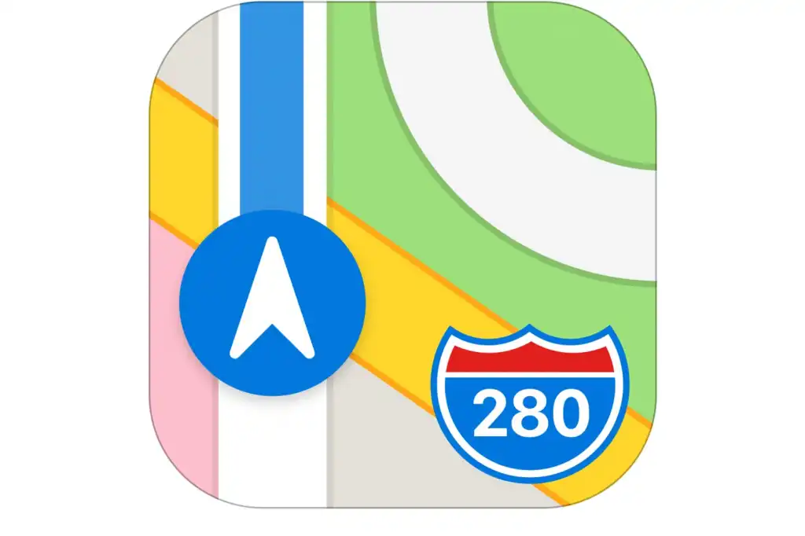

Boracay Island
For directions:  Note: You will be redirect to Google Maps
Boracay is a small island in the central Philippines. It's known for its resorts and beaches. Along the west coast, White Beach is backed by palm trees, bars and restaurants.
On the east coast, strong winds make Bulabog Beach a hub for water sports. Nearby, the observation deck on Mount Luho offers panoramic views over the island. Offshore, coral reefs and shipwrecks are home to diverse marine life.
It is located at Western Visayas region of the Philippines.
You can contact them at 09178227290, 09353205476, 09178605559